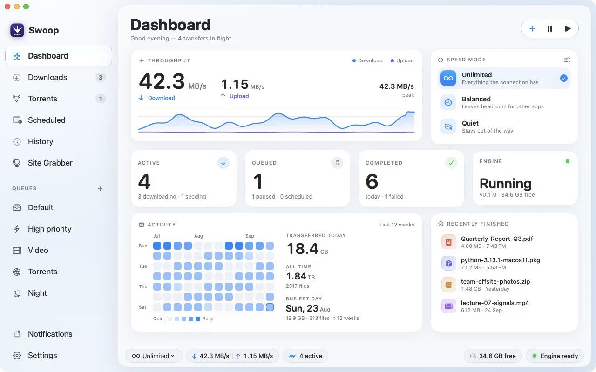
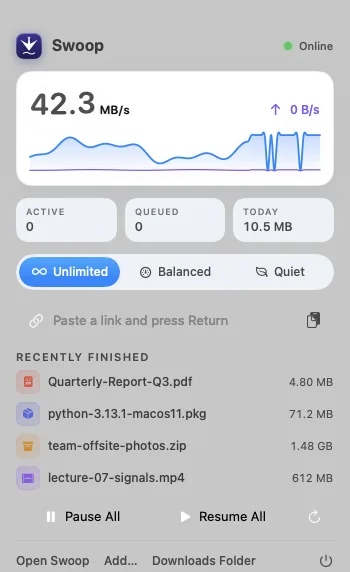
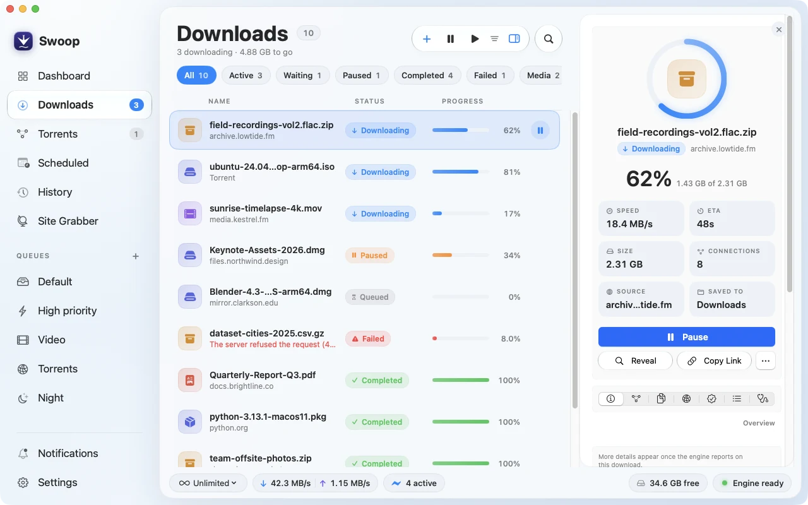
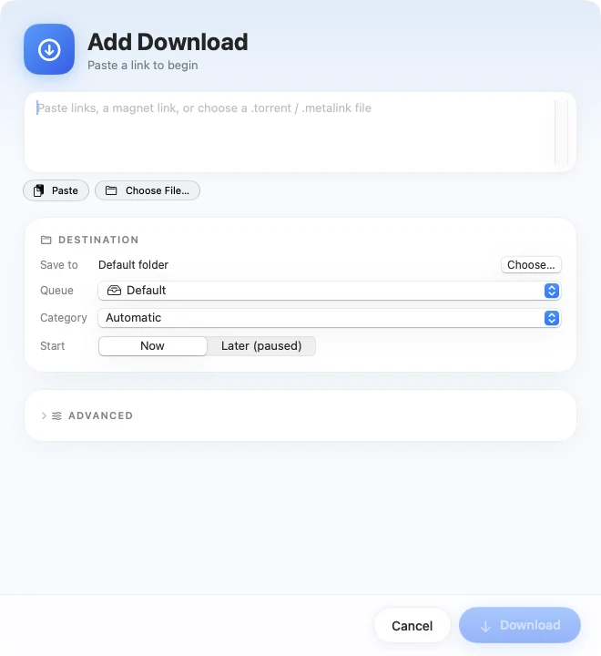
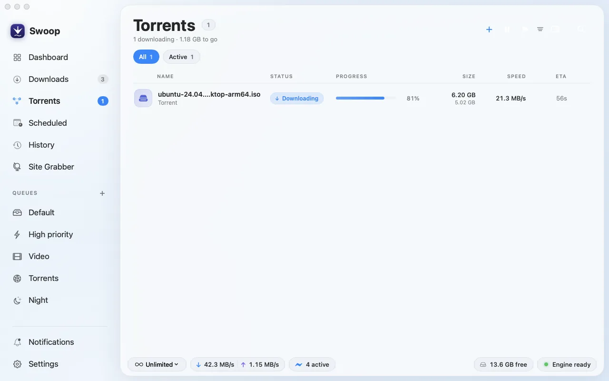
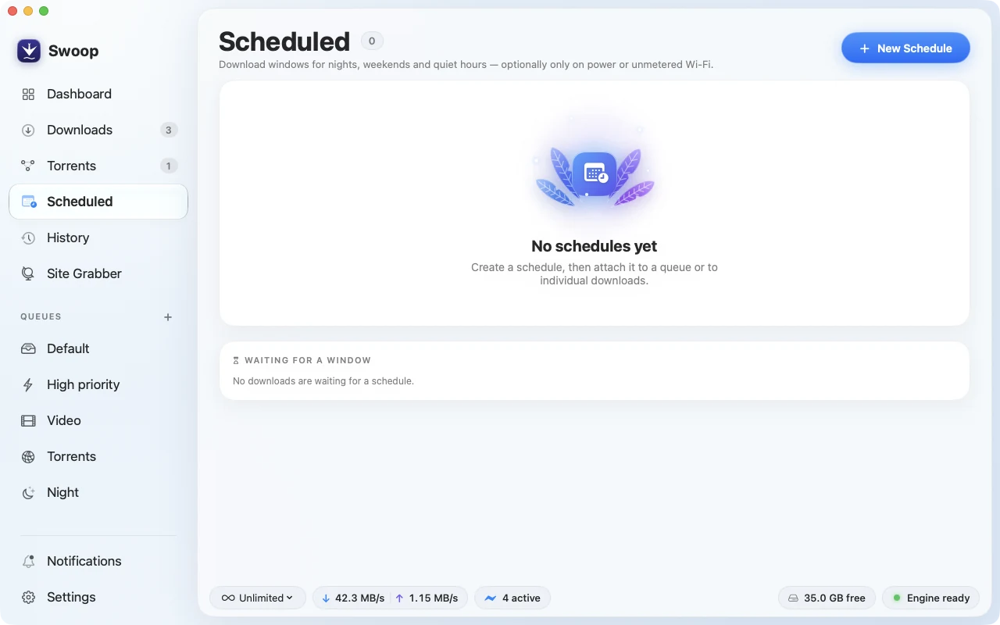
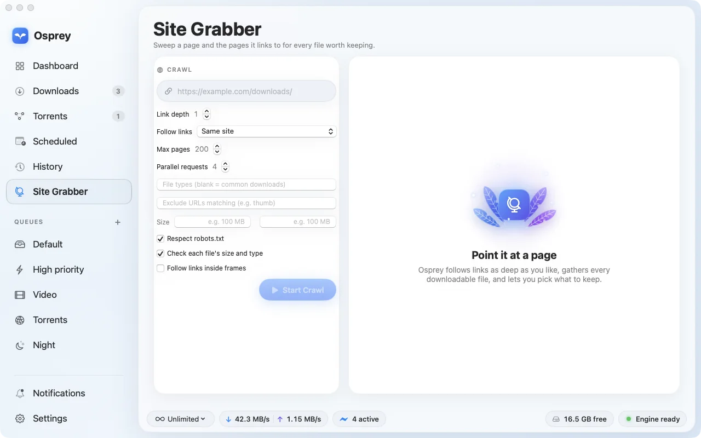
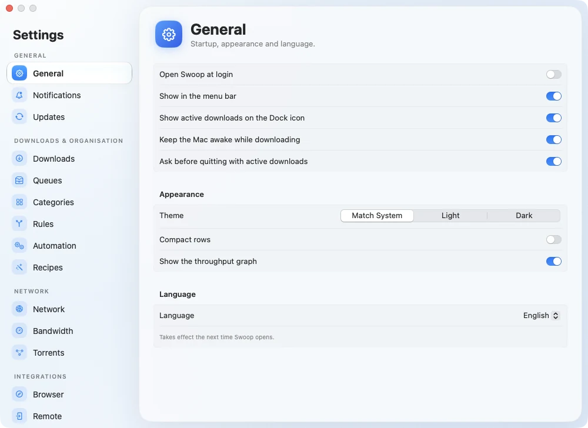
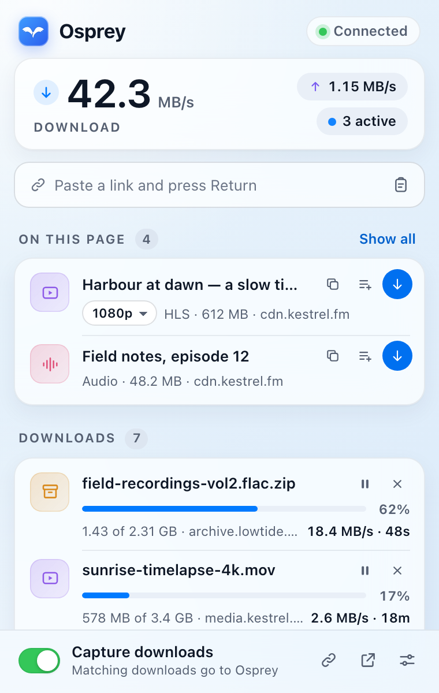

Swoop is a native Mac download manager with a Rust engine underneath. It splits files into adaptive segments, handles torrents, streams and schedules, and keeps every byte of your data on your Mac.
v0.1.0 · Universal: Apple silicon and Intel · macOS 14 Sonoma or later

SwiftUINative, with Liquid Glass
RustEngine, CLI and server
ZeroAccounts or telemetry
UniversalApple silicon and Intel
Features
Everything a serious download needs. Nothing it doesn’t.
Adaptive segmented acceleration
Each file is split into segments that steal work from one another. Swoop keeps an extra connection only when it earns at least a 15% gain, backs off the moment a server answers 429, 503 or Retry-After, and splits slow tails at the end so the last few percent don’t crawl.
8 connectionswork-stealing
Every common source
HTTP and HTTPS with resume and mirrors, FTP and FTPS, BitTorrent and magnet links, Metalink, and HLS streams without DRM.
HTTP(S)
FTP(S)
BitTorrent
Magnet
Metalink
HLS
Queues and schedules
Queues with their own folder, concurrency and order. Schedule windows for nights and weekends, optionally only on power or unmetered Wi‑Fi.
Bandwidth modes
Limits apply globally, per queue and per download, and change live.
UnlimitedEverything the connection has
BalancedLeaves headroom for other apps
QuietStays out of the way
Rules and automation
Rules pick the category, folder, queue and tags as a download is added. When it finishes, move it, tag it in Finder, notify you or call a webhook.
Site grabber
Crawl a page and the pages it links to, within the depth and scope you set, and pick the files worth keeping. It respects robots.txt.
Browser capture
An extension for Chrome, Edge and Firefox hands matching downloads to Swoop, adds “Download with Swoop” menus and spots media on the page.
Remote control
Pair a phone or another computer with a one-time code, then add and manage downloads from the built-in web app over TLS.
Crash recovery
Progress is checkpointed only after data is safely on disk. After a crash or restart, Swoop checks each download against what’s on disk and picks up where it left off.
Private by design
No accounts, no analytics, no telemetry. Swoop talks to the sites you download from and the devices you pair, and nothing else. Passwords and tokens live in your Keychain.
0bytes of telemetry
A closer look
Designed like it was always part of your Mac.
Every screen follows the system: light and dark, SF typography, translucent glass and a menu bar extra.
Dashboard
Your whole network, at a glance.
Live download and upload throughput, the current speed mode, what’s active, queued and done today, and twelve weeks of activity, in one calm view.
Switch between Unlimited, Balanced and Quiet in one click
Recently finished files are a click away from Finder
A menu bar extra for speed, modes and paste-to-download

Downloads and Inspector
Every transfer, fully in view.
Filter by state, then open the inspector for speed, ETA, connections, source and destination. When something fails, Swoop says why and retries without throwing away what it already has.
Resumes after a restart, and checks the server’s file hasn’t changed first
Verifies checksums: MD5, SHA‑1, SHA‑256, SHA‑512 or BLAKE3
Paste links, a magnet link, or a .torrent or .metalink file to begin


Torrents
Torrents, without the clutter.
Open a .torrent file or a magnet link and choose which files you want. Swoop handles the swarm and shows you peers, trackers and the piece map when you ask.
Stop seeding at a ratio or after a set time
DHT and tracker support, with private torrents kept private
Seeding never takes a download slot

Scheduler
Let the night shift do the heavy lifting.
Create download windows for nights, weekends and quiet hours, then attach them to a queue or to individual downloads. Actions can run when a window opens or closes.
Only run on power or on unmetered Wi‑Fi, if you like
Starting a download by hand always overrides its schedule

Site Grabber
Point it at a page. Keep what matters.
Swoop follows links as deep as you allow, gathers every downloadable file it finds, and lets you pick what to keep before anything is downloaded.
Link depth, same-site scope, page limits and parallel requests
Respects robots.txt and paces its requests to each host
Checks each file’s size and type up front

Settings
Make it yours, down to the folder.
Sort files by type into their own folders, set speed modes and how much runs at once, and decide which devices can reach Swoop. Every option lives in one familiar window.

Browser extension
Click a link. Swoop takes it from there.
One extension for Chrome, Edge and Firefox passes downloads straight to Swoop, with the cookies and referrer the site expects.
Chrome
Edge
Firefox
Takes over downloads that match your file types, size and site rules
“Download with Swoop” for links, images, media, selections, or every link on a page
Detects video, audio and HLS streams on the page and flags DRM streams it can’t save
Press ⌥⇧D to send the current page
Talks to Swoop on your Mac through a native helper, or to a paired Swoop over HTTPS
Store listings are on the way. Until then, build the extension from the repository and load it unpacked; the setup guide covers each browser.

SwoopConnected
Detected on this page
HLSkeynote-1080p.m3u8
MP4trailer.mp4 · 84 MB
ZIPpress-kit.zip · 212 MB
DRMProtected streamCan’t save
Remote and headless
Run it anywhere. Drive it from everywhere.
The engine behind the app also runs on its own, on a Linux box, a NAS or in Docker, with the same CLI, API and web app.
Pair in seconds
Swoop shows a one-time code and a QR code carrying its certificate fingerprint. Codes expire after two minutes and work once.
ABCDEFGH
A web app built in
Open the engine’s address in any browser for a light, fast remote UI. Each device gets its own token and permissions: read, add, control or admin.
A proper CLI
Add, list, pause, watch, change modes and export history. JSON output and documented exit codes make it easy to script.
# Add a file with eight connectionsswoop add https://example.com/file.zip --dir ~/Downloads --connections 8# Add a magnet link without starting itswoop add 'magnet:?xt=urn:btih:…' --paused# Watch progress live, then ease off the networkswoop watchswoop mode balanced# Print a pairing code and QR code for a new deviceswoop pair
# Run the full engine with no app, plus the TLS remote listenerswoop server --remote 0.0.0.0:41780 --download-dir ~/Downloads# From another shell on the same machineswoop statusswoop list --json# From a paired workstationswoop --url https://nas.local:41780 --token "$SWOOP_TOKEN" list
docker compose -f docker/compose.yaml up -d --build
The Docker image is built from source; there’s no published image yet. It runs as a non-root user and serves the remote API and web app on port 41780.
Security and privacy
Private by default. Careful by design.
A download manager handles untrusted files, hostile servers and your passwords. Here’s what Swoop guarantees in code.
Local-first, no telemetry
No accounts and no analytics. Nothing leaves your Mac except requests to the sources you download from and, if you choose, to devices you pair.
Secrets stay in the Keychain
Site logins and tokens are stored in the macOS Keychain. The database holds only names and token hashes, and every log line is redacted.
Fenced file writes
Server-supplied names are sanitised and path tricks refused. Folders like ~/.ssh and LaunchAgents are off-limits, and finished files are quarantined by macOS.
Remote is off until you turn it on
When enabled, connections use TLS with a certificate unique to your Mac. Device tokens are scoped, hashed, expiring and revocable, and failed pairing attempts lock out.
Code runs only with your consent
Automations that run commands, shell or AppleScript need approval given in the Mac app. Remote devices and imported settings can’t grant it.
Safe on hostile networks
A public site can’t redirect Swoop to a local or private address. TLS 1.2 is the minimum, and certificate exceptions are opt-in, per host.
Gallery
Every screen, in light and dark.
Select a screenshot to view it full size. Use the arrow keys to move between them.
FAQ
Good questions.
What do I need to run Swoop?
A Mac running macOS 14 Sonoma or later. The app is a universal build, so it runs natively on Apple silicon and Intel Macs.
macOS says it “cannot verify the developer”. Is that expected?
Yes. Version 0.1.0 is ad-hoc signed and not yet notarised by Apple, so Gatekeeper blocks it the first time. To open it:
Drag Swoop to your Applications folder.
Control-click (or right-click) Swoop and choose Open.
Choose Open again in the dialog. macOS remembers your choice.
If you prefer Terminal, xattr -dr com.apple.quarantine /Applications/Swoop.app does the same thing. Because each ad-hoc build has a new identity, macOS may ask for Keychain or automation permissions again after you update.
Does Swoop collect any data?
No. There are no accounts, analytics or telemetry. Swoop only connects to the addresses you ask it to download from, and to devices you pair yourself.
Which browsers does the extension support?
Chrome, Edge and Firefox. It isn’t in the browser stores yet, so for now you build it from the repository and load it unpacked. There’s no Safari version.
Can I run it without a Mac?
The Mac app needs macOS, but the engine, CLI and web app run headless on Linux or in Docker with swoop server. Pair your phone or laptop to control it remotely.
Can it download protected streaming video?
No. Swoop downloads HLS streams without DRM and refuses encrypted formats such as FairPlay and Widevine. Live streams and DASH aren’t supported yet.
How do I update?
Download the latest release from GitHub and replace the app in your Applications folder. Your downloads, queues and settings are kept.
Is it open source?
Yes. Swoop is available under your choice of the MIT or Apache 2.0 licence. The source, docs and issue tracker are on GitHub.
Ready when you are.
Free and open source. Universal for Apple silicon and Intel, macOS 14 or later.